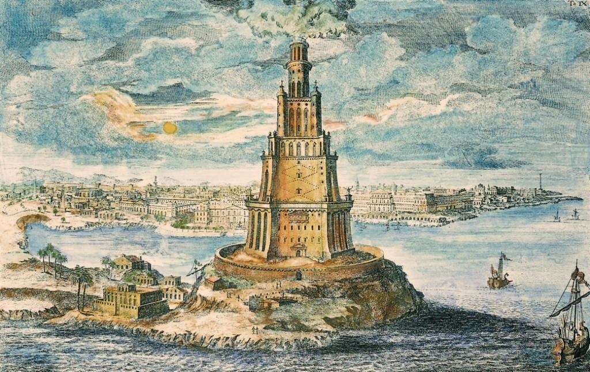

starożytna latarnia morska zbudowana około 280-279 p.n.e., ze względu na wielkość i wspaniałość architektonicznego ukształtowania uważana za jeden z siedmiu cudów świata starożytnego.
Wzniesiona na podstawie planów Sostratosa (możliwe, iż pomysłodawcą budowy był sam Aleksander Macedoński) na polecenie Ptolemeusza I, ukończona podczas rządów jego syna Ptolemeusza II. Nazwisko architekta znane jest dzięki zachowanej pod starożytnym tynkiem inskrypcji:
Sostratus, syn Deksyfanesa, poświęcił tę budowlę bogom ocalenia, w imieniu wszystkich tych, którzy żeglują po morzach.
Budowa obiektu trwała ok. 14-20 lat; uroczyste oddanie do użytku miało miejsce w 279 p.n.e..
Według legendy Ptolemeusz II miał w niej zamknąć 72 uczonych w piśmie, w osobnych pomieszczeniach, by niezależnie od siebie dokonali przekładu Starego Testamentu.
W odległej o kilkadziesiąt kilometrów od Aleksandrii miejscowości Taposiris Magna znajduje się pomniejszona replika tej latarni wzniesiona za Ptolemeusza II.
Latarnia morska znajdowała się na przybrzeżnej wysepce Faros na Morzu Śródziemnym, która mając sztuczne połączenie ze stałym lądem poprzez groblę heptastadion, stanowiła część wejścia do portu w Aleksandrii w Egipcie. Ocenia się, że była to wieża o wysokości ok. 115~120 m. Miała dolną kondygnację o przekroju kwadratu, nad nią wznosiła się kolejna, ośmiokątna i trzecia o przekroju okrągłym. Latarnia zwieńczona była kopułą wspartą na ośmiu kolumnach. Na niej ustawiony był posąg Posejdona, greckiego boga mórz i oceanów, o wysokości około 7 m. W tamtych czasach była to najwyższa budowla na świecie o podstawie krótszej od jej wysokości. Latarnię dość dokładnie opisał arabski geograf i podróżnik z XI wieku – Abu Abd Allah Muhammad Idrisi. Jej uproszczony wizerunek zachował się też na monetach i malowidłach.
Początkowo miała być zbudowana z bloków wapiennych i obłożona płytami z białego wypolerowanego marmuru. Na niższych kondygnacjach miała znajdować się winda służąca do wciągania na górne kondygnacje opału. Latarnia posiadała także własną cysternę ze słodką wodą.
Po zmierzchu rozpalano na szczycie latarni ogień. Opał dostarczano na szczyt wieży na grzbietach osłów oraz za pośrednictwem tragarzy. Odbijane metalowymi lustrami światło widoczne było z odległości kilkudziesięciu kilometrów i ułatwiało nawigację żeglarzom zmierzającym do Aleksandrii (według Józefa Flawiusza, z odległości 300 stadiów – ok. 30 mil morskich).

Wyobrażenie latarni
Fort wybudowany w miejscu latarni